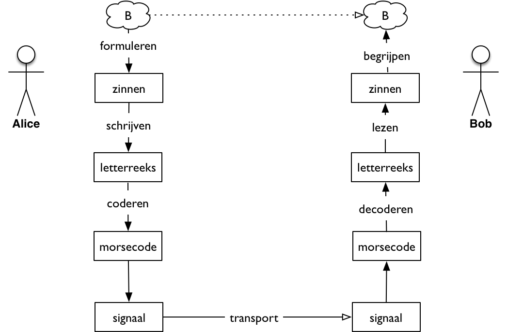
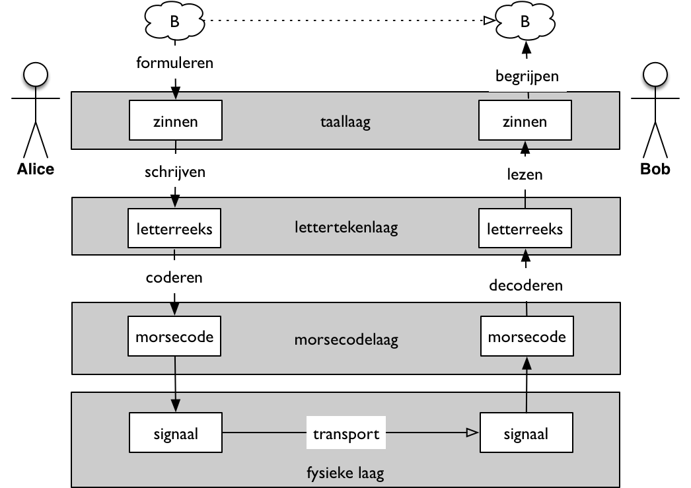

Communicatie in lagen¶
Concepten en leerdoelen
- lagen in het communicatiemodel
- lagen in ICT-systemen?
In de praktijk is er meestal geen sprake van een enkele vorm, maar van een reeks vormen. Als voorbeeld van transport van Alice naar Bob gebruiken we morse-communicatie: Alice schrijft het bericht op voor de telegrafist A die het bericht verstuurt naar de telegrafist B in de buurt van Bob; deze schrijft het bericht in leesbare tekst op voor Bob.
{kind=link}
We hebben hier te maken met de volgende vormen en stappen:
- Alice formuleert het bericht in een taal die Bob begrijpt, bijvoorbeeld Nederlands.
- Alice schrijft dit bericht op met behulp van lettertekens (uit een alfabet).
- Telegrafist A zet deze reeks lettertekens om in morse-symbolen (coderen).
- Deze morse-symbolen worden als elektrisch signaal getransporteerd naar de andere telegrafist.
- Telegrafist B zet de morse-symbolen om in lettertekens (decoderen)
- Bob leest de reeks lettertekens
- en begrijpt de Nederlandse zinnen.
In het dagelijks leven voeren we de stappen van vormgeven (representeren) en interpreteren meestal automatisch uit: we zijn ons vaak niet bewust van de verschillende stappen die we maken - en van de keuzemogelijkheden die we daarbij hebben.
We kunnen de verschillende stappen begrijpen als “lagen” in de communicatie. Een laag kun je dan zien als de “virtuele” communicatie van de betreffende vorm, met een eigen protocol. Deze laag staat los van de onderliggende communicatie: deze kan vaak op verschillende manieren plaatsvinden. Een laag staat ook los van het bovenliggende gebruik: die is voor deze laag niet van belang. De lagen worden gekoppeld door de representatie en interpretatie - bijvoorbeeld “schrijven” en “lezen” of “coderen” en “decoderen”. Voor het voorbeeld kunnen we de volgende lagen onderscheiden:
{kind=link}
Opmerking: je kunt de keten van Alice naar Bob op verschillende manieren tekenen; ook als een lange horizontale keten. We tekenen een dergelijke communicatieketen vaak op de manier zoals hierboven, om de lagen in de keten aan te geven. We noemen een dergelijke stapeling van lagen, elk met hun eigen protocol, ook wel een “protocol-stack”.
Lagen in ICT-systemen
P.M.